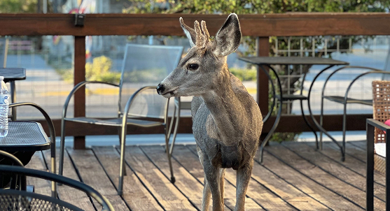

Climate Change
Why it affects deer
Climate change impacts deer through temperature shifts, altered snow and ice patterns, changes in food availability, and increased heat stress and parasites. Mild winters and hotter and drier summers are often harmful, which alters food access. These effects can change deer populations, their distribution, and the ecosystems they inhabit. Deer can adapt and alter movement patterns, however, with warmer winters deer populations expand. The population expanding can change and ripple through ecosystems, affecting plant communities, and human activities like hunting.
How it Ties into Cities
Since deer are running towards urban areas due to climate change, there's an increasing amount of human and wildlife conflict. Urban green spaces and lawns can provide food for deer; this makes deer stay in populated areas. This raises risks of vehicle collisions, disease transmission, and property damage. All of these issues lead to an overabundance of deer. They use urban areas as cooler refuges during heatwaves, but this can lead to issues of straining local infrastructure and wildlife management.
Other Animals
The changing climate doesn't only affect deer but many more animals involved. As ecosystems grow warmer, plants bloom out of season, and animals alter their migration patterns, affecting food sources, prey availability, and water access. These impacts ripple through entire ecosystems, leading to a loss of wildlife and biodiversity globally. Climate change currently affects close to 16,000 species and that number is expected to grow further. From tropical rainforests to the coral reefs in the ocean, climate change is impacting wildlife habitats everywhere.
